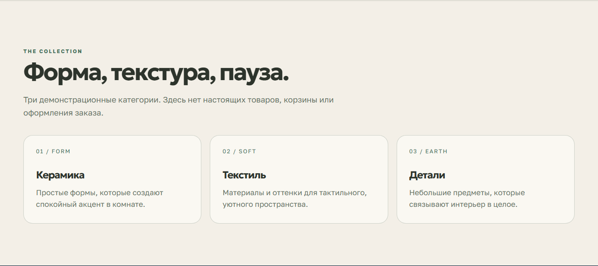
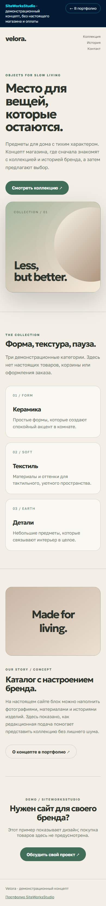

ДЕМОНСТРАЦИОННЫЙ КОНЦЕПТ / WEB
Тихая подача коллекции для предметного бренда.
Velora — открываемый визуальный концепт сайта бренда товаров для дома. Он показывает настроение, структуру каталога и подачу категорий.
СтатусДемо-концепт
ФорматВитрина коллекции
ПосмотретьОткрыть сайт-концепт ↗
01 / ЗАДАЧА
Что хотели показать
Показать, как сайт может представить коллекцию и характер бренда до знакомства с отдельными товарами.
02 / ДЛЯ КОГО
Кому подходит подход
Небольшие бренды предметов для дома и визуально ориентированные магазины.
03 / РЕШЕНИЕ
Что сделали
- Сделали спокойную типографику и композицию, где внимание остаётся на коллекции.
- Разделили пример каталога на три демонстрационные категории.
- Добавили историю бренда и последовательный переход к обсуждению проекта.
- Подготовили адаптивный просмотр для узкого экрана.
04 / ПОСМОТРЕТЬ
Экраны проекта



СЛЕДУЮЩИЙ ШАГ
Нужен проект с похожим подходом?
Опишите задачу, материалы и желаемый результат. Состав работ и стоимость обсудим до начала.